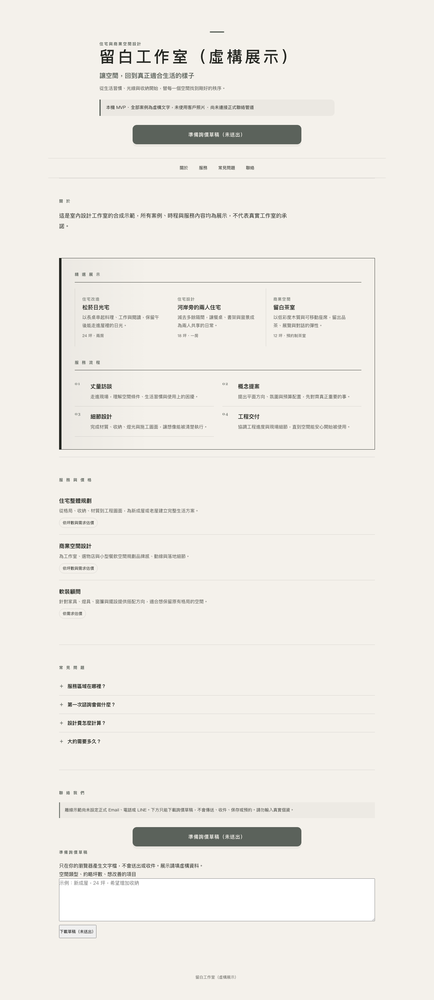

形象網站：讓訪客看懂品牌
服務、作品與常見問題集中在同一頁，手機與桌面皆可閱讀。以下是實際本機畫面。

正式交付使用客戶核准的內容與授權素材，聯絡入口與上線方式另行確認。這張截圖為既有虛構工程畫面，不提供可操作的表單或收件。
DEMOS / 看示範
使用虛構品牌與資料的本機工程示範，非客戶成交案例。
服務、作品與常見問題集中在同一頁，手機與桌面皆可閱讀。以下是實際本機畫面。

正式交付使用客戶核准的內容與授權素材，聯絡入口與上線方式另行確認。這張截圖為既有虛構工程畫面，不提供可操作的表單或收件。
目前展示已核准的固定 FAQ 回答、未知問題轉人工，以及接手後停止自動回覆。以下是實際本機验收输出節錄，非即時客服或生成式模型回應。
FAQ-01｜分類：faq 回應：這是完全虛構的「雲杉小屋設計示範店」，僅供本機流程展示。 對外送出：否 UNKNOWN-01｜分類：unknown 回應：我幫你請專人確認一下，確認後回覆你。 對外送出：否
目前為記憶體中的本機流程，沒有真人值班、正式 LINE、生成式模型或永久對話保存。正式模型、渠道串接、代管與維護需依需求另行評估；不保證一般問句都能命中固定 FAQ。
D.Ai 為軍諺整合行銷旗下品牌